Un cable no hace nada
Tienes pila, tienes cable y tienes bombilla, y aun así no se enciende. Lo que falta no es una pieza: es una forma.
El tema en un minuto
De dónde sale la energía, y qué hace falta para llevarla hasta donde quieresVoz sintetizada y audio propio. La boca sigue el volumen real de la voz: se mueve cuando habla y se para en los silencios.
En el tema anterior conseguiste que el movimiento llegara de un sitio a otro: engranajes, poleas, palancas. Funciona, pero hay un detalle que lo estropea todo: el que empuja eres tú. En cuanto sueltas la manivela, se para.
Para que se mueva sin ti hace falta energía que venga de otro sitio y que llegue hasta donde está el mecanismo. Casi siempre llega por un cable. Así que empecemos por el cable.
Comparad los dibujos. Van a salir casi todos iguales: un cable que sale del polo positivo de la pila y llega al casquillo de la bombilla. Es lo lógico: la pila tiene la electricidad, la bombilla la necesita, el cable la lleva.
Pruébalo. No se enciende. Ni un poco, ni débilmente, ni después de un rato. Nada.
Y ahora la pregunta que importa: ¿qué le falta? No vale contestar «una pila más grande» ni «un cable mejor». Con la misma pila, el mismo cable y la misma bombilla, se puede encender. Lo que falta no es una pieza.
Lo que falta no es una pieza: es un anillo
La idea de que la electricidad «va» de la pila a la bombilla y allí se gasta es cómoda y es falsa. Las cargas del cobre no se consumen en la bombilla: la atraviesan y siguen, y tienen que poder volver a la pila por otro camino.
Por eso un solo cable no sirve por muy bien que lo conectes. Lo que hace falta es un camino cerrado sobre sí mismo, un anillo. Y esto tiene una consecuencia que cuesta creer la primera vez: si en cualquier punto de ese anillo falta un trozo —aunque sea un milímetro, aunque sea al otro lado de la habitación— no circula nada por ninguna parte. No es que circule menos. Es que no circula.
Compruébalo tú mismo. Pon y quita cables, abre y cierra el interruptor, y mira qué pasa en cada caso.
Fíjate en el tercer caso, el del puente. Ahí el camino está cerradísimo —de hecho hay dos— y la lámpara sigue apagada. La corriente hace lo mismo que el agua y que tú: coge el camino fácil. Si le pones al lado un puente de cobre que no le estorba nada, se va por el puente y se salta la lámpara.
El circuito
Circuito eléctrico: camino cerrado por el que las cargas salen del generador, atraviesan el receptor y vuelven al generador.
Los cuatro elementos que necesita:
- Generador: empuja las cargas. Pila, batería, fuente de alimentación.
- Conductores: llevan las cargas de un sitio a otro. Los cables, de cobre.
- Receptor: transforma la energía en algo útil. Lámpara, motor, zumbador.
- Elemento de control: deja pasar o corta. Interruptor, pulsador, conmutador.
Los tres estados
- Circuito abierto: el anillo está cortado en algún punto. No circula corriente.
- Circuito cerrado: el anillo está completo y la corriente atraviesa el receptor.
- Cortocircuito: hay un camino de vuelta sin receptor, solo cable. La corriente se dispara, el generador se calienta y algo se quema.
Cómo se dibuja: simbología normalizada
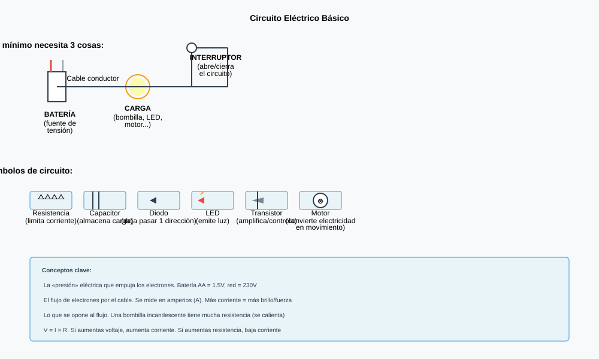
Un esquema eléctrico no es un dibujo del montaje: es un plano. No importa dónde esté físicamente cada pieza ni qué forma tiene, importa qué está conectado con qué. Para eso cada componente tiene un símbolo acordado internacionalmente.
Todo esto no se podía hacer antes de 1800, y no por falta de ganas. Electricidad había: se acumulaba frotando ámbar o vidrio y se guardaba en botellas de Leyden. Pero era electricidad estática, que se descarga de golpe en una chispa. Servía para hacer saltar a los invitados de una fiesta, no para tener una lámpara encendida una hora.
Lo que faltaba era un generador que empujara de forma continua. Y apareció de una discusión científica que no iba de esto. Luigi Galvani había visto contraerse las patas de una rana muerta al tocarlas con metal, y lo atribuía a una «electricidad animal» propia del ser vivo. Alessandro Volta defendía lo contrario: que la rana no pintaba nada y que bastaban dos metales distintos con algo húmedo entre ellos.
Para ganar la discusión, en 1800 Volta apiló discos de cinc y de cobre separados por cartones empapados en salmuera. Aquel montón daba corriente de manera continua, sin rana. Ganó el argumento y de paso inventó el primer generador de la historia; de aquel montón viene la palabra que usas todos los días: pila.
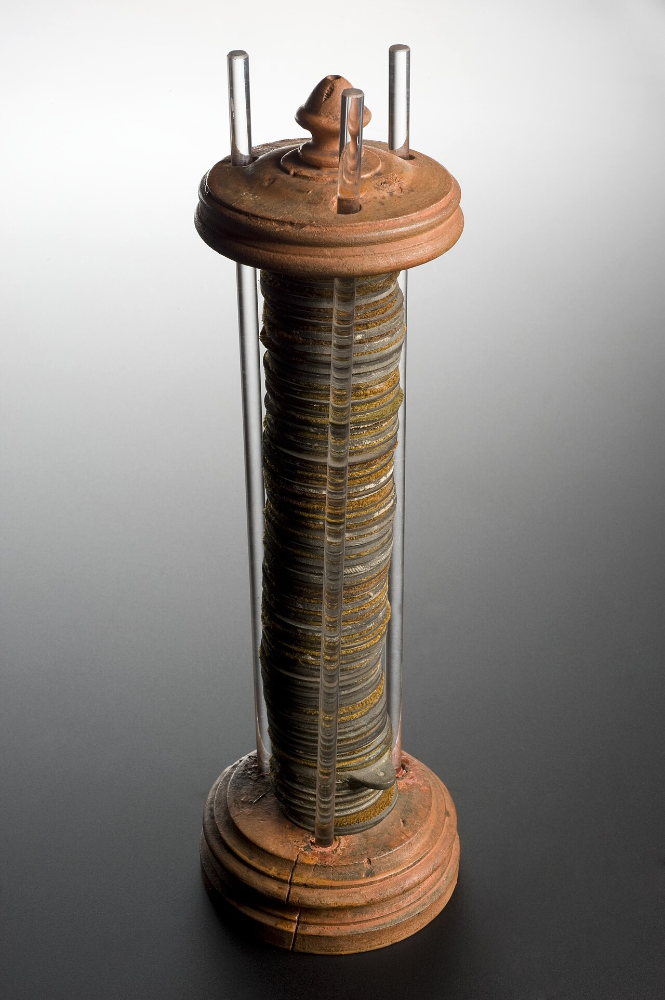
Fue el primer aparato capaz de mantener una corriente durante horas. Todo lo que hay en esta página empieza aquí. Wellcome Collection · CC BY 4.0 · Wikimedia Commons
Repásalo en vídeo y anota una cosa: cada vez que aparezca un componente, páralo y dibuja su símbolo de memoria antes de mirarlo. Si no te sale, es que aún no lo tienes.
El vídeo no se carga hasta que lo pulsas, y se reproduce sin cookies de seguimiento. Si no se ve aquí —porque la red del centro bloquee YouTube o porque ese vídeo no se deje empotrar—, ábrelo directamente aquí. Es obra de su autor y no forma parte del material publicado bajo la licencia de esta página.
Qué hay que hacer
Primero en la libreta, y después en el simulador Tinkercad Circuits, que funciona en el navegador y no hay que instalar nada.
- Tres esquemas a mano, con simbología normalizada y regla: el circuito abierto, el circuito cerrado y el circuito con interruptor. Rotulad cada elemento con su nombre.
- Montadlo en Tinkercad: batería de 4,5 V (el bloque de 3 pilas AA), interruptor y bombilla. Que encienda al cerrar y apague al abrir.
- Provocad un cortocircuito a propósito: un cable que vaya directo de un polo de la pila al otro. Copiad literalmente el mensaje que saca el simulador.
- Explicad en dos líneas por qué se queja, usando la palabra receptor.
- Guardad una captura de cada montaje y pegadlas en la libreta o entregadlas.
Cómo se evalúa
- Los tres esquemas usan los símbolos normalizados, no dibujitos (3 puntos).
- El montaje de Tinkercad enciende y apaga de verdad (3 puntos).
- El cortocircuito está reproducido y el mensaje, copiado tal cual (2 puntos).
- La explicación habla del camino sin receptor, no de «que hay mucha electricidad» (2 puntos).
Vuelve al dibujo que hiciste al empezar la clase. Le faltaba el camino de vuelta, y ahora sabes que eso no es un detalle: es la definición de circuito.
- ¿Por qué no basta con un cable del polo positivo a la bombilla?
Ver respuesta
Porque las cargas no se gastan en la bombilla: la atraviesan y necesitan volver al generador. Sin camino de vuelta no circula nada.
- Un circuito está cerrado y bien montado, pero hay un cable que une los dos bornes de la lámpara. ¿Qué pasa y cómo se llama?
Ver respuesta
La corriente se va por el cable, que no le estorba, y la lámpara se queda apagada. Es un cortocircuito: hay camino de vuelta sin receptor, la corriente se dispara y el generador se calienta.
- ¿Para qué sirve exactamente un interruptor?
Ver respuesta
Para abrir el anillo a voluntad. Es un hueco que tú decides cuándo está y cuándo no. Y como basta un hueco en cualquier punto para que se pare todo, da igual dónde se ponga.
El empujón, el caudal y el estorbo
Tres magnitudes que se miden con tres aparatos distintos, y una regla de cuatro caracteres que las ata a las tres.
En la sesión anterior montaste el anillo. Ahora vamos a mirar qué pasa dentro. Dos hechos que todo el mundo conoce y que, puestos uno al lado del otro, no cuadran.
Uno. Una pila de petaca de 4,5 V se puede agarrar con los dedos por los dos polos a la vez y no se nota nada. Un enchufe de 230 V puede matar a una persona. En los dos casos hay cobre y hay cargas.
Dos. Enciendes un tostador: el hilo de dentro se pone al rojo y el cable que va al enchufe sigue frío. Están uno detrás de otro en el mismo camino, o sea que por los dos pasa exactamente la misma corriente.
Escribe una frase que explique los dos hechos a la vez. ¿Qué es lo que cambia de un caso al otro?
Va a salir, seguro, «es que hay más electricidad». El problema de esa respuesta no es que sea mentira: es que no sirve para nada. No dice cuánta, no se puede medir con ningún aparato y no permite calcular nada. Y sobre todo: con la misma frase intentas explicar dos cosas que son distintas.
Porque en el primer hecho lo que cambia es el empujón, y en el segundo lo que cambia es el estorbo. Son dos magnitudes diferentes, y hay una tercera que las relaciona.
Tres magnitudes, y ni una más
Todo lo que pasa en un circuito de este curso se describe con tres números. Si los tienes, lo tienes todo.
Las tres magnitudes
- Tensión (V) · el empujón. Diferencia de potencial que el generador mantiene entre sus dos bornes. Se mide en voltios, con el voltímetro, conectado en paralelo con lo que quieras medir.
- Intensidad (I) · el caudal. Cantidad de carga que atraviesa cada segundo un punto del circuito. Se mide en amperios, con el amperímetro, conectado en serie, o sea intercalado en el camino.
- Resistencia (R) · el estorbo. Oposición que pone un elemento al paso de la corriente. Se mide en ohmios (Ω), con el óhmetro, y siempre con el circuito desconectado.
La tensión existe aunque no circule nada: una pila en un cajón tiene sus 4,5 V. La intensidad solo aparece cuando el circuito está cerrado.
La regla que las une
Las tres no van por su cuenta. Mueve el empujón y el estorbo en este banco de pruebas y mira qué le pasa al caudal.
Dos cosas que conviene ver ahí y no olvidar. La primera: la gráfica es una recta que pasa por el origen. Eso es lo que de verdad dice la ley —que si doblas la tensión, se dobla la corriente— y no es obvio: podría no ser así, y de hecho en una bombilla caliente o en un LED no lo es. La segunda: cuando bajas mucho la resistencia, la corriente se dispara. Eso, dibujado, es el cortocircuito de la sesión anterior.
Ley de Ohm
En un conductor metálico a temperatura constante:
I = V / R · V = I × R · R = V / I
Con V en voltios, R en ohmios e I en amperios. Si mezclas unidades —milivoltios con ohmios, por ejemplo— el resultado no significa nada.
Ejemplo resuelto
Pila de 4,5 V y bombilla de 9 Ω: I = 4,5 / 9 = 0,5 A.
La misma pila con una bombilla de 18 Ω: I = 4,5 / 18 = 0,25 A, la mitad de corriente y bastante menos luz.
Georg Simon Ohm publicó esto en 1827, en un libro titulado Die galvanische Kette, mathematisch bearbeitet. Lo interesante no es la fórmula, es cómo consiguió llegar a ella.
Sus primeros experimentos no cuadraban, y no por culpa de la teoría: las pilas de su época no daban dos veces seguidas el mismo valor. Ohm cambió la pila por un par termoeléctrico —dos metales soldados, con una unión caliente y otra fría—, que sí mantenía una tensión estable, y solo entonces le salieron los números limpios. Esa es una lección de Tecnología más útil que la propia ley: cuando los datos no cuadran, a veces el problema está en el aparato de medir.
No le sirvió de mucho al principio. Su libro se recibió con frialdad en Alemania y Ohm acabó dimitiendo de su puesto. Tuvo que esperar catorce años a que la Royal Society de Londres le diera la medalla Copley, en 1841. Hoy la unidad de resistencia lleva su apellido.
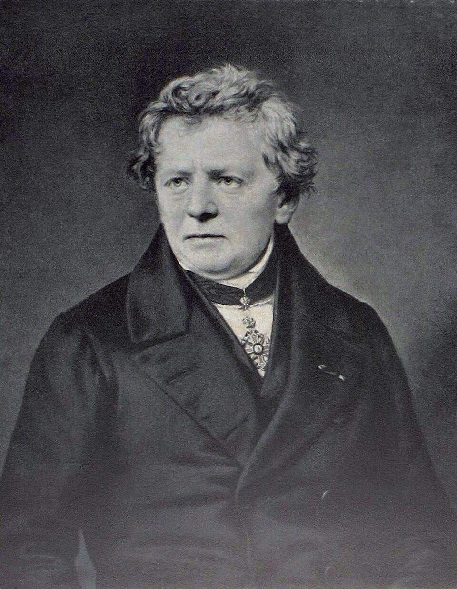
Va un poco más allá de esta sesión: habla también de potencia, que es la sesión 4. De momento quédate con la parte de la ley de Ohm y toma nota de la otra: la vas a necesitar.
El vídeo no se carga hasta que lo pulsas, y se reproduce sin cookies de seguimiento. Si no se ve aquí —porque la red del centro bloquee YouTube o porque ese vídeo no se deje empotrar—, ábrelo directamente aquí. Es obra de su autor y no forma parte del material publicado bajo la licencia de esta página.
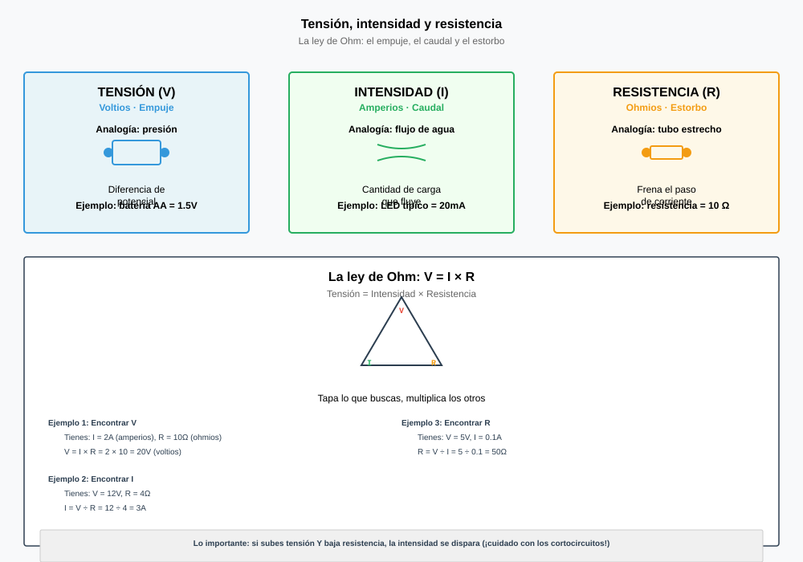
Qué hay que hacer
En Tinkercad Circuits. Lo importante de esta práctica es el orden: primero se calcula, después se mide.
- Montad un circuito con una pila de 9 V, una resistencia y un multímetro en serie midiendo intensidad.
- Para cada una de estas tres resistencias —100 Ω, 220 Ω y 1 kΩ—, escribid primero en la libreta qué intensidad predecís con la ley de Ohm. Operación incluida. Después simulad y anotad lo que marca.
- Rellenad la tabla: R · I predicha · I medida · diferencia.
- Cambiad la pila por una de 4,5 V, repetid con la de 220 Ω y comprobad si la corriente se ha reducido en la proporción que esperabais.
- Escribid una conclusión de tres líneas: ¿se cumple la ley? ¿dónde están las diferencias y a qué pueden deberse?
Cómo se evalúa
- Las tres predicciones están escritas con su operación y antes de medir (3 puntos).
- La tabla está completa y las unidades son correctas (3 puntos).
- La segunda parte, con la pila de 4,5 V, está hecha y comparada (2 puntos).
- La conclusión interpreta los números y no los repite (2 puntos).
Las tres magnitudes tienen ahora nombre, unidad, aparato de medida y una regla que las ata. Con eso ya se puede calcular un circuito en vez de opinar sobre él.
- Una pila de 12 V y una resistencia de 48 Ω. ¿Qué intensidad circula?
Ver respuesta
I = V / R = 12 / 48 = 0,25 A, es decir 250 mA.
- Por una lámpara pasan 0,3 A cuando se le aplican 6 V. ¿Cuánto vale su resistencia?
Ver respuesta
R = V / I = 6 / 0,3 = 20 Ω.
- ¿Por qué el amperímetro se conecta en serie y el voltímetro en paralelo?
Ver respuesta
Porque el amperímetro mide lo que pasa por un sitio, así que tiene que estar en el camino para que la corriente lo atraviese. El voltímetro mide una diferencia entre dos puntos, así que se pone a caballo de esos dos puntos.
Una detrás de otra, o cada una por su lado
Hay exactamente dos maneras de conectar dos lámparas a una pila. Elegir mal una vez costó dinero de verdad en 1882.
Montar un anillo y calcularlo: hecho. Ahora complicamos lo mínimo posible: en vez de una lámpara, dos.
Comparad los dibujos. Descartando los que son el mismo esquema girado, quedan exactamente dos: o las pones una detrás de otra en el mismo camino, o le das a cada una su propio camino entre los mismos dos puntos. No hay una tercera.
Y esas dos maneras no son un matiz de dibujante. Compara estas dos situaciones, que conoces las dos:
- En una guirnalda vieja se funde una bombilla y se apaga la tira entera.
- En tu casa se funde la de la cocina y el salón sigue encendido.
¿Cuál de tus dos dibujos es la guirnalda y cuál es tu casa? Y la segunda pregunta, que es la que se falla: si en un montaje añades lámparas, ¿la pila tiene que dar más corriente o menos?
La respuesta intuitiva es «menos, porque hay más estorbo». En uno de los dos montajes es verdad. En el otro es exactamente al revés, y saber cuál es cuál es lo que impide que se te queme una regleta.
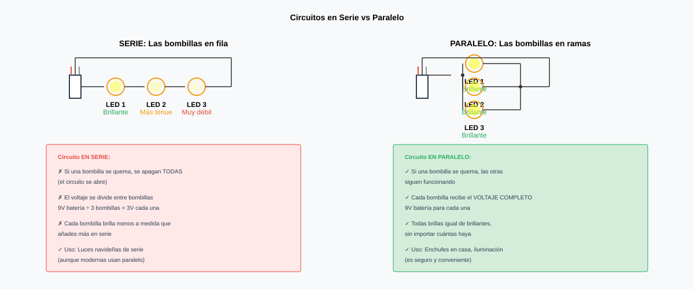
Los dos montajes, con las cuentas delante
Tres lámparas iguales de 9 Ω y una pila de 4,5 V. Cambia de montaje, pulsa una lámpara para fundirla y mira los números de abajo: están calculados con la ley de Ohm, no puestos a mano.
Lo que hay que llevarse de ahí son dos cosas. La primera es la avería: en serie una lámpara fundida abre el único camino y las apaga todas; en paralelo cada una cae sola. La segunda es más sutil y es la que engaña: al añadir lámparas en paralelo la resistencia total baja y la corriente total sube.
Tiene sentido si dejas de pensar en «estorbo» y piensas en caminos: cada lámpara que añades en paralelo es una puerta más por la que salir, y con más puertas abiertas sale más gente, no menos.
Conexión en serie
- Un único camino: la corriente es la misma en todos los elementos.
- Las resistencias se suman: RT = R₁ + R₂ + R₃
- La tensión de la fuente se reparte entre los receptores.
- Si uno falla, se abre el circuito y se paran todos.
Conexión en paralelo
- Varios caminos entre los mismos dos puntos: la tensión es la misma en todos ellos.
- Las corrientes se suman: IT = I₁ + I₂ + I₃
- La resistencia total baja: 1/RT = 1/R₁ + 1/R₂ + 1/R₃ — y si son iguales, RT = R / n.
- Si uno falla, los demás siguen.
Los dos casos, con números
Tres lámparas de 9 Ω con 4,5 V:
- Serie: RT = 27 Ω · I = 4,5/27 = 0,167 A · cada lámpara recibe 1,5 V.
- Paralelo: RT = 9/3 = 3 Ω · IT = 1,5 A · cada lámpara recibe 4,5 V y toma 0,5 A.
Elegir entre serie y paralelo no es un ejercicio: es una decisión que costó dinero de verdad. El 4 de septiembre de 1882, Thomas Edison puso en marcha la central de Pearl Street, en el bajo Manhattan: la primera central comercial de electricidad para alumbrado. Repartía corriente continua a 110 voltios y aquel primer día encendía unas 400 lámparas de poco más de ochenta clientes del barrio.
Edison cableó a sus clientes en paralelo. La alternativa existía y estaba en la calle: el alumbrado de arco de las farolas iba en serie, y una sola avería dejaba a oscuras la línea entera. Para vender luz a domicilio eso era inaceptable, porque ningún cliente quiere que su lámpara dependa de la del vecino.
La segunda decisión fue menos evidente, y es pura ley de Ohm. Edison diseñó lámparas de resistencia alta: de una de aquellas lámparas de 1880 se conservan los datos —0,94 amperios a 55 voltios, o sea unos 58 Ω—. Con filamentos de poca resistencia habría hecho falta mucha más corriente por lámpara, y más corriente significa cables de cobre más gruesos. El cobre enterrado bajo la calle era una de las partidas más caras de la instalación: elegir la resistencia del filamento era, en realidad, elegir cuánto cobre había que comprar.
Y la pega se la puso la misma ley. Con 110 V de corriente continua, la resistencia de los propios cables se comía la tensión por el camino y Pearl Street apenas daba servicio a unas manzanas a la redonda. Llevar la electricidad lejos exigía subir mucho la tensión, y eso, entonces, solo sabía hacerlo la corriente alterna.
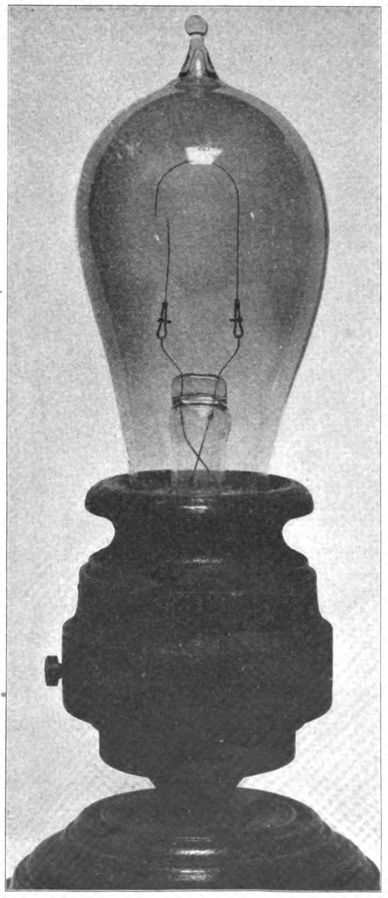
La fuente de la que procede la foto da su consumo: 0,94 amperios a 55 voltios. Esos dos números son los que puedes usar tú para calcular su resistencia con la ley de Ohm, y salen unos 58 ohmios. Joseph E. Hinds, Popular Electricity, 1910 · Dominio público · Wikimedia Commons
Un ejercicio resuelto paso a paso, del mismo nivel que el vuestro. Hacedlo vosotros primero en la libreta, con el vídeo pausado, y comparad después.
El vídeo no se carga hasta que lo pulsas, y se reproduce sin cookies de seguimiento. Si no se ve aquí —porque la red del centro bloquee YouTube o porque ese vídeo no se deje empotrar—, ábrelo directamente aquí. Es obra de su autor y no forma parte del material publicado bajo la licencia de esta página.
Qué hay que hacer
En Tinkercad Circuits, con tres lámparas iguales y una batería de 4,5 V.
- Montaje en serie. Medid la corriente total y la tensión en cada lámpara. Anotad también cómo alumbran.
- Montaje en paralelo. Las mismas medidas.
- En cada montaje, retirad una lámpara (es la forma de simular que se funde) y anotad qué pasa con las otras dos.
- Rellenad una tabla comparativa con: RT calculada, I total medida, V en cada lámpara, y qué ocurre al fundirse una.
- Comprobad las cuentas: calculad RT con las fórmulas y comparadla con V/I medidos. Si no coinciden, decid dónde creéis que está el desajuste.
- Conclusión: ¿cómo cablearíais las luces de esta aula, y por qué? Una razón técnica y una económica.
Cómo se evalúa
- Los dos montajes funcionan y están medidos (3 puntos).
- La tabla comparativa está completa, con unidades (2 puntos).
- La prueba de la avería está hecha en los dos montajes (2 puntos).
- Las cuentas de RT cuadran con lo medido, o se explica por qué no (2 puntos).
- La conclusión da las dos razones, técnica y económica (1 punto).
Con lo de hoy ya puedes mirar una instalación y decir, sin abrirla, cómo está cableada: si al fundirse una cosa cae todo, va en serie; si no, va en paralelo.
- Dos lámparas de 6 Ω en serie con una pila de 12 V. ¿Resistencia total y corriente?
Ver respuesta
RT = 6 + 6 = 12 Ω; I = 12 / 12 = 1 A. Cada lámpara recibe 6 V, la mitad de la pila.
- Las mismas dos lámparas, ahora en paralelo con la misma pila. ¿Y ahora?
Ver respuesta
RT = 6 / 2 = 3 Ω; IT = 12 / 3 = 4 A. Cada lámpara recibe los 12 V completos y toma 2 A. Cuatro veces más corriente que en serie.
- ¿Por qué a Edison le salía más barato hacer lámparas de resistencia alta?
Ver respuesta
Porque con más resistencia, la misma tensión da menos corriente (I = V/R), y menos corriente permite cables de cobre más finos. El cobre era una de las partidas más caras de la instalación.
Lectura del tema
Una sesión entera dedicada a leer y contestar. 31 párrafos numerados: cada uno lee el suyo en voz alta, en orden. Después, diez preguntas por escrito.
Lo que cuesta tenerlo encendido
La misma electricidad de siempre, ahora medida en euros y en gramos de CO₂. Hacen falta dos magnitudes más: una dice lo deprisa que gastas y otra lo que llevas gastado.
Hasta aquí, la corriente y su reparto. Hoy la electricidad deja de ser un dibujo en la libreta: hoy son euros y son gramos de CO₂.
¿Qué gasta más electricidad: la bombilla del pasillo encendida toda la noche, o el microondas calentando un vaso de leche cinco minutos? Contesta en la libreta antes de seguir leyendo, y escribe por qué.
Casi todo el mundo dice el microondas, y lo dice con un argumento que suena impecable: el microondas es mil vatios y la bombilla son nueve. Es más de cien veces más. No hay color.
Hagamos la cuenta de verdad. Ocho horas de bombilla LED: 9 W durante 8 h son 72 unidades de algo. Cinco minutos de microondas: 1.000 W durante 5/60 de hora son 83 de ese mismo algo. Gana el microondas, pero por los pelos, no por cien veces.
Y ahora cambia la bombilla por una de las viejas, de 60 W: 60 × 8 = 480. Casi seis veces el microondas. La misma pregunta, la misma bombilla encendida el mismo rato, y la respuesta se da la vuelta.
Si con los vatios solos no se puede contestar, ¿qué hace falta? Y una segunda, más fina: cuando en casa dicen «esta bombilla gasta mucho», ¿están hablando de vatios o de otra cosa?
Hacen falta dos magnitudes, no una. Una dice lo deprisa que gastas, y es la que viene escrita en el aparato. La otra dice lo que llevas gastado, y es la que viene escrita en la factura. Confundirlas es el error que hace que una casa pague de más todos los meses.
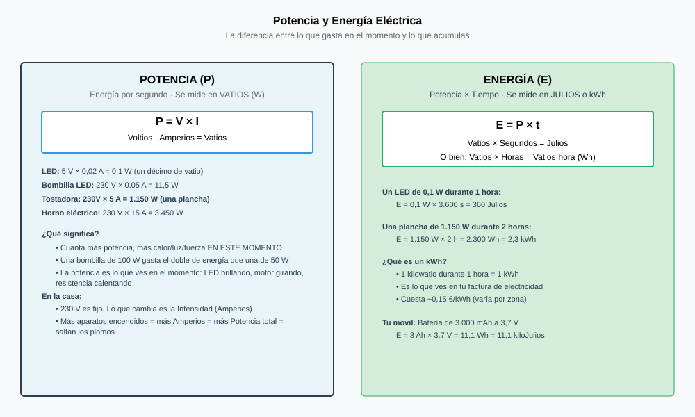
Lo deprisa que gastas: la potencia
En la sesión 2 te quedaste con dos números: el empujón (V) y el caudal (I). Multiplicarlos no es un capricho de fórmula: si empujas más fuerte y además pasa más cantidad, la energía que entregas cada segundo crece por los dos lados a la vez.
Potencia eléctrica
Potencia (P): energía que un aparato transforma cada segundo. Se mide en vatios (W).
P = V × I
Juntando la ley de Ohm salen las otras dos formas, útiles cuando no tienes los dos datos: P = I² × R y P = V² / R.
Ejemplo. Un secador de 2.000 W enchufado a 230 V: I = P / V = 2.000 / 230 = 8,7 A. Por eso los secadores llevan el cable gordo y los cargadores de móvil no.
Y aquí se cierra algo que quedó abierto en la sesión 2: por el hilo del tostador y por su cable pasa la misma corriente, y solo uno se pone al rojo. Ahora se puede decir con una fórmula: como P = I² × R y la I es la misma en los dos, el que tiene mucha R se lleva casi toda la potencia. El hilo del tostador tiene mucha; el cable de cobre, casi ninguna. Ese es exactamente el motivo de que los cables no calienten y las resistencias sí.
Lo que llevas gastado: la energía
La potencia no dice nada del rato. Para saber lo que has gastado hay que multiplicarla por el tiempo, que es justo lo que le faltaba a la pregunta del principio.
Energía y kilovatio-hora
Energía (E) = P × t. En el Sistema Internacional se mide en julios: un vatio durante un segundo es un julio.
El problema del julio es que es ridículamente pequeño para una casa. Por eso la factura usa otra unidad, hecha a la medida del consumo doméstico:
1 kWh = 1.000 W durante 1 hora = 3.600.000 julios
Para trabajar con ella, la regla práctica:
E (kWh) = P (kW) × t (h) · coste = E × precio del kWh
Ojo con las unidades: la potencia en kilovatios (2.000 W son 2 kW) y el tiempo en horas (15 minutos son 0,25 h). Mezclarlas es el fallo más frecuente.
Por qué salta la luz cuando enchufas dos cosas grandes
En la sesión anterior viste que en tu casa todo está en paralelo: cada aparato recibe los mismos 230 V y las corrientes se suman. Si las corrientes se suman y P = V × I, entonces las potencias también se suman. Mira lo que pasa cuando te pasas.
Dos límites distintos, y conviene no mezclarlos. El primero es el cable: una base de enchufe normal es de 16 A, o sea 16 × 230 = 3.680 W; pasar de ahí no hace saltar nada, simplemente calienta el cable de la regleta. El segundo es la potencia contratada: cuando la pasas, el interruptor de control abre el circuito y te quedas a oscuras. Y fíjate en un detalle bonito de las potencias que se contratan: 3,45 kW son exactamente 15 A, y 4,6 kW son 20 A. No son números raros, son amperios redondos disfrazados de kilovatios.
La factura: dónde está el dinero
Una factura de la luz no es una lista de precios: es dos alquileres sumados. Uno por lo que consumes y otro por estar conectado, que se paga aunque te vayas todo el mes de viaje. Esta es una factura de ejemplo de un mes de 30 días, con 250 kWh consumidos.
| Concepto | Cómo sale | Importe |
|---|---|---|
| Término de potencia | 3,45 kW × 30 días × 0,10 €/kW·día | 10,35 € |
| Término de energía | 250 kWh × 0,18 €/kWh | 45,00 € |
| Suma de los dos términos | 55,35 € | |
| Impuesto eléctrico | 5,11 % de 55,35 | 2,83 € |
| Alquiler del contador | 0,027 €/día × 30 | 0,81 € |
| Base imponible | 58,99 € | |
| IVA | 21 % de 58,99 | 12,39 € |
| Total a pagar | 30 días, 250 kWh | 71,38 € |
Y ahora la pregunta que cambia las decisiones de una casa: ¿a cuánto te ha salido de verdad el kWh? No a 0,18. Divide el total entre los kWh consumidos: 71,38 / 250 = 0,2855 €/kWh. Un 59 % más que el precio que venía anunciado. Todo lo que calcules con el precio de la tarifa te saldrá corto.
El dato sirve de contraste: según Eurostat, los hogares españoles que consumen entre 2.500 y 5.000 kWh al año —esta casa, justo— pagaron de media 0,2669 €/kWh con todos los impuestos incluidos en el segundo semestre de 2025. Nuestra factura de ejemplo cae donde tiene que caer.
Leer una factura
- Término de potencia: se paga por los kW contratados y los días, gastes o no gastes. Contratar de más es pagar de más todos los días del año.
- Término de energía: se paga por los kWh que marca el contador.
- Encima van los impuestos y el alquiler del contador.
- Precio real del kWh = total ÷ kWh consumidos. Es el único número con el que merece la pena calcular.
Los porcentajes de esta factura son los vigentes en septiembre de 2026 (IVA del 21 % e impuesto eléctrico del 5,11 %) y han cambiado varias veces en los últimos años. Los precios de los dos términos son de ejemplo: los tuyos están en tu contrato.
La etiqueta energética: la letra y el número
Desde el 1 de marzo de 2021 los electrodomésticos vuelven a llevar una escala simple de la A a la G, sin los antiguos A+, A++ y A+++, que habían acabado amontonando a casi todos los aparatos en la misma casilla. Lo regula el Reglamento (UE) 2017/1369.
De la etiqueta hay que mirar dos cosas, y la segunda es la que se ignora casi siempre:
- La letra solo sirve para comparar aparatos del mismo tipo. Un frigorífico A y un horno A no tienen nada que ver.
- El número de debajo es el que sirve para calcular: kWh al año en frigoríficos, kWh por cada 100 ciclos en lavadoras, lavavajillas y secadoras.
Hagamos la cuenta. Dos frigoríficos del mismo tamaño, uno de 148 kWh/año y otro de 296. La diferencia son 148 kWh al año, que a 0,27 €/kWh son 39,96 € cada año, y unos 38 kg de CO₂. Si el bueno cuesta 120 € más en la tienda, se paga solo en tres años; y un frigorífico dura quince.
De los kWh al CO₂
Cada kWh que gastas tiene detrás unas emisiones, que dependen de con qué se ha generado esa electricidad. Para el mix eléctrico español, la CNMC publicó para la energía producida en 2025 un valor de 258 g de CO₂eq por kWh.
CO₂ = E (kWh) × 258 g/kWh
Ese número baja cada año según entran renovables: en 2015 estaba en 398 g/kWh. Y ojo, es el mix de la red: una comercializadora que venda electricidad 100 % renovable certificada declara un valor distinto en tu factura.
Si buscas este dato por tu cuenta te vas a encontrar cifras bastante más bajas —alrededor de 146 g/kWh— y no es que ninguna sea mentira: esas miden lo que sale de generar la electricidad, y la de la CNMC mide el mix con el que se vende, del que ya se ha descontado la parte que alguien ha comprado certificada como renovable. Son dos preguntas distintas. Cuando des un número de estos, di siempre cuál de las dos estás contestando.
¿Y cómo se cuenta un kWh? Durante casi un siglo, con un aparato que hace la multiplicación a mano y sin electrónica: el contador de inducción. Dentro hay un disco de aluminio entre dos bobinas, una recorrida por la tensión y otra por la corriente. El campo de las dos arrastra el disco, y el disco gira tanto más deprisa cuanto mayor es el producto V × I. O sea, la velocidad del disco es la potencia, y las vueltas acumuladas son la energía.
Por eso un contador viejo lleva escrito algo como 375 U/kWh: trescientas setenta y cinco vueltas del disco por cada kilovatio-hora. Con un cronómetro y esa cifra se puede medir la potencia de un aparato sin ningún instrumento más: se cuenta cuánto tarda en dar diez vueltas y se hace una regla de tres.
Los contadores digitales de ahora ya no tienen disco: multiplican V por I muchas veces por segundo y suman. Pero conservan la costumbre de anunciar su constante en la placa, ahora en forma de impulsos por kWh del piloto que parpadea.
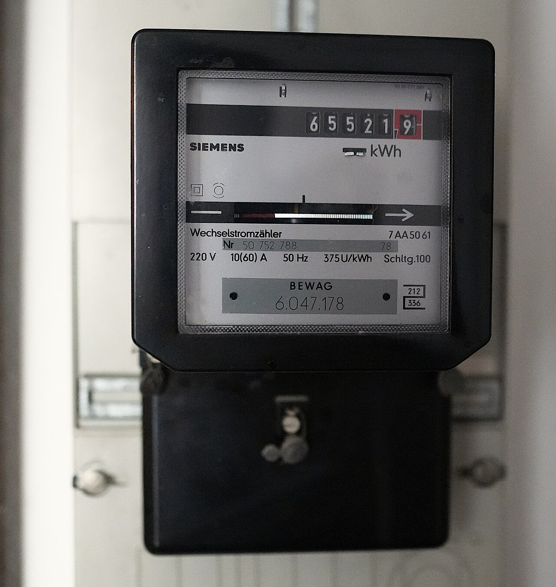
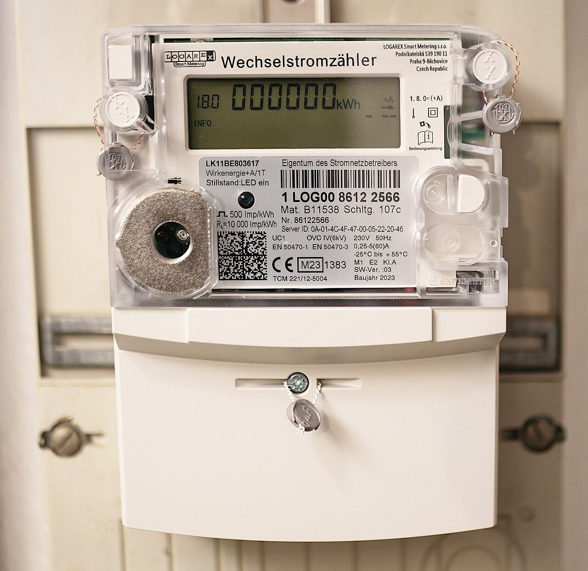
Las dos fotos son del mismo cuadro de una vivienda de Berlín, tomadas con un día de diferencia: la del contador viejo, la víspera de retirarlo; la del nuevo, el día de instalarlo. Allí la red es la misma que aquí —230 V y 50 Hz—, así que lo que se lee en las placas vale igual para un contador español. Y fíjate en un detalle: el viejo dice 220 V y el nuevo 230 V. No es un error de ninguno de los dos: la red europea estaba a 220 V y se armonizó en 230 V, así que el aparato viejo es de antes de aquello.
Otra explicación de lo mismo, con ejercicios resueltos. Antes de darle al play, calcula tú lo que cuesta tener encendida la luz de tu habitación tres horas al día durante un mes: así el vídeo te corrige en vez de contártelo.
El vídeo no se carga hasta que lo pulsas, y se reproduce sin cookies de seguimiento. Si no se ve aquí —porque la red del centro bloquee YouTube o porque ese vídeo no se deje empotrar—, ábrelo directamente aquí. Es obra de su autor y no forma parte del material publicado bajo la licencia de esta página.
Qué hay que hacer
Con calculadora y con la escena de la regleta abierta. No hace falta traer ninguna factura de casa: la de ejemplo de la teoría tiene todos los datos.
- Comprobad la factura de la teoría línea a línea. Rehaced las siete operaciones y decid si el total está bien. Copiad cada operación, no solo el resultado.
- Calculad el precio real del kWh (total ÷ kWh) y decid cuánto se equivocaría alguien que hiciera sus cuentas con los 0,18 €/kWh de la tarifa.
- Inventario de tu habitación: elegid cuatro aparatos, buscad su potencia en la placa de características o en el cargador (si no la tenéis a mano, usad las de la escena) y estimad las horas que funcionan al día.
- Tabla: aparato · P (W) · h/día · kWh/mes · €/mes · g CO₂/mes. Usad el precio real del paso 2 y los 258 g/kWh.
- Una decisión. Elegid el aparato que más gasta y proponed un cambio concreto (sustituirlo, usarlo menos, apagarlo de otra forma). Calculad cuánto se ahorra al año en euros y en kg de CO₂.
- En la escena, encontrad una combinación de aparatos que caliente la regleta sin que salte el automático, y otra que lo haga saltar. Anotad las dos y explicad la diferencia en dos líneas.
Cómo se evalúa
- Las siete operaciones de la factura están rehechas y bien (2 puntos).
- El precio real del kWh está calculado y comparado con el de la tarifa (2 puntos).
- La tabla de los cuatro aparatos está completa, con unidades correctas (3 puntos).
- La decisión del paso 5 viene con su ahorro calculado, no con una opinión (2 puntos).
- Las dos combinaciones de la escena están anotadas y explicadas (1 punto).
La bombilla del pasillo y el microondas ya se pueden comparar, y no hace falta discutir: se multiplica y se mira.
- Una estufa de 1.500 W funciona 4 horas al día durante 20 días. ¿Cuánta energía gasta y cuánto cuesta a 0,27 €/kWh?
Ver respuesta
E = 1,5 kW × 4 h × 20 días = 120 kWh. Coste = 120 × 0,27 = 32,40 €. Y de paso: 120 × 258 = 30,9 kg de CO₂.
- ¿Qué corriente pide una vitrocerámica de 2.300 W a 230 V? ¿Se puede enchufar a una regleta junto a un secador de 2.000 W?
Ver respuesta
I = P / V = 2.300 / 230 = 10 A. Con el secador serían 10 + 8,7 = 18,7 A, por encima de los 16 A de la base: el cable de la regleta se calentaría. Y además 4.300 W superan la potencia contratada más habitual, así que probablemente saltaría el automático antes.
- Un frigorífico de clase A y otro de clase F. ¿Qué dato de la etiqueta te dice lo que vas a pagar, la letra o el número?
Ver respuesta
El número: los kWh al año. La letra solo te dice si es de los buenos o de los malos dentro de su familia, y no se puede multiplicar por el precio del kWh. Con el número sí: (kWh/año) × precio = euros al año.
El componente que no perdona
Una lámpara aguanta lo que le eches. Un LED se muere en el primer segundo si no has hecho la cuenta antes.
Encima de la mesa, una pila de petaca y un LED. Nada más.
Dibuja en la libreta cómo lo conectarías para que se encienda. Tienes treinta segundos: es el mismo circuito de la primera sesión cambiando la lámpara por el LED.
No lo montes todavía. Sigue leyendo.
Ese dibujo está bien y es exactamente lo que no hay que hacer. Si lo montas, el LED se enciende un instante —a veces ni eso— y se queda muerto para siempre. No se funde como una bombilla, con su filamento partido y su ruidito: simplemente deja de alumbrar, y por fuera sigue igual de nuevo.
Y en la mesa de al lado alguien ha puesto una resistencia en serie y el suyo luce perfectamente. Pregunta obligada: ¿cuál ha puesto? La respuesta que suele salir es «una que había en la caja». Así que a veces luce, a veces alumbra tan poco que no se ve, y a veces se muere igual.
Dos preguntas. La primera: ¿por qué la lámpara aguanta y el LED no, si los dos están conectados a la misma pila? La segunda, la importante: si hay que ponerle una resistencia, ¿de cuántos ohmios? Y sobre todo, ¿de dónde sale ese número?
Pista de la sesión 2, donde ya lo avisamos sin darle importancia: la gráfica de la ley de Ohm es una recta en un conductor metálico, y dijimos que en un LED no lo es. Ahí está todo el problema de hoy.
Un LED no es una bombilla pequeña
Un LED es un diodo: un componente que deja pasar la corriente en un solo sentido. Si lo conectas al revés no es que alumbre menos, es que no pasa nada en absoluto. Por eso sus dos patas no son intercambiables y tiene dos maneras de decírtelo: la pata larga es el ánodo (por ahí entra la corriente, al polo +) y el borde de la cápsula tiene un chaflán plano junto al cátodo (al polo −).
Pero lo que de verdad lo diferencia de una lámpara es esto: el LED no tiene un valor de resistencia. Una lámpara de 9 Ω tiene 9 Ω le pongas la tensión que le pongas (mientras no cambie mucho de temperatura), y por eso puedes calcular su corriente con la ley de Ohm. Un LED, no. Un LED se comporta así:
- Por debajo de cierta tensión, llamada tensión directa (Vf), prácticamente no conduce y no alumbra.
- En cuanto la pasas, la corriente se dispara: unas décimas de voltio de más multiplican la corriente por diez.
Por eso conectarlo directamente a 4,5 V es una sentencia: la pila empuja con 4,5 y el LED «solo quiere» unos 2, así que la corriente sube hasta que algo se rompe. Y por eso mismo no puedes calcular la corriente del LED con la ley de Ohm: no hay una R que poner.
El diodo LED
- Conduce en un solo sentido. Pata larga = ánodo (+). Chaflán = cátodo (−).
- Tiene una tensión directa Vf que depende del color, y que apenas cambia aunque cambie la corriente.
- No es óhmico: su corriente no es proporcional a la tensión, así que hay que limitarla desde fuera.
- Un LED de 5 mm de los normales trabaja bien entre 5 y 20 mA. Por encima alumbra más y dura mucho menos.
Tensiones directas típicas
Rojo 2,0 V · amarillo 2,1 V · verde 2,2 V · azul y blanco 3,2 V. Son valores típicos para orientarse: el de tu LED está en su hoja de características, y dos LED del mismo color de fabricantes distintos pueden diferir en varias décimas.
La resistencia limitadora, y de dónde sale su número
La solución no es un truco: es la ley de Ohm aplicada donde sí vale. Pon una resistencia en serie con el LED. Están en serie, luego por los dos pasa la misma corriente, y la tensión de la pila se reparte entre los dos —exactamente lo que viste en la sesión 3—. Como el LED se queda con su Vf pase lo que pase, todo lo demás cae en la resistencia.
Y en la resistencia sí puedes usar Ohm, porque la resistencia sí es óhmica. Así que tú decides la corriente que quieres, y despejas:
Cálculo de la resistencia limitadora
R = (Vfuente − Vf) / I
Con la tensión en voltios y la corriente en amperios (10 mA son 0,010 A).
Ejemplo. LED rojo (2,0 V) en un pin de la micro:bit (3 V), y queremos 5 mA:
- Tensión que sobra: 3 − 2,0 = 1,0 V.
- R = 1,0 / 0,005 = 200 Ω.
- En la caja de clase no hay 200 Ω: la serie que llevan estos surtidos va 100, 120, 150, 180, 220…, así que el valor más próximo por encima es 220 Ω.
- Con 220 Ω la corriente real es 1,0 / 220 = 4,5 mA. Perfecto.
Siempre hacia arriba. Si eliges el valor de debajo pasará más corriente de la que habías decidido, que es justo de lo que te estabas protegiendo.
Eso de que «de 200 Ω no hay» no es una pega de la tienda del barrio: las resistencias se fabrican en series de valores normalizados. La más común en el aula es la E12, que solo tiene doce valores por cada década —10, 12, 15, 18, 22, 27, 33, 39, 47, 56, 68 y 82— multiplicados por 1, 10, 100, 1.000… De un valor al siguiente hay un salto de un 20 % largo, y cada resistencia se fabrica con una tolerancia de ±10 %: una de 100 Ω puede ser en realidad de 110 y una de 120 puede ser de 108. Los márgenes de dos valores vecinos se tocan, así que fabricar valores intermedios no serviría de nada.
Prueba aquí todas las combinaciones que quieras. La escena hace la cuenta entera y luego busca la resistencia que existe de verdad. Y el mando de abajo funciona como el que elijas: el pulsador solo alumbra mientras lo tienes apretado.
Tres cosas que merece la pena que pruebes ahí antes de seguir: pon un LED azul en la micro:bit y mira por qué no hay resistencia que lo arregle; quita la resistencia y lee lo que dice el pie; y pasa del pulsador al interruptor para ver la diferencia con el dedo, no con la definición.
Pulsador e interruptor: parecen lo mismo y no lo son
Los dos abren y cierran un circuito. La diferencia está en qué hacen cuando los sueltas, y es una diferencia mecánica: el pulsador lleva un muelle dentro.
Los dos elementos de control
- Interruptor: es biestable. Se queda como lo dejes, abierto o cerrado, sin que nadie lo sujete. La luz del techo, la lámpara de la mesilla.
- Pulsador: vuelve solo a su posición de reposo. El más común es el normalmente abierto (NA): cerrado mientras lo aprietas, abierto en cuanto lo sueltas. El timbre, el claxon, cada tecla del teclado.
- También hay pulsadores normalmente cerrados (NC), que hacen lo contrario: el botón que detecta que la puerta del frigorífico se ha cerrado y apaga la luz.
Regla para elegir: si lo que mandas tiene que pararse cuando sueltes, pulsador. Si tiene que quedarse, interruptor. Un timbre con interruptor suena hasta que alguien vuelve a subir; una lámpara con pulsador se apaga en cuanto quitas el dedo.
Con la micro:bit
En 2.º la placa que usamos es la micro:bit. Para lo de hoy nos interesa solo su borde inferior: los cinco anillos grandes, que son los que se pinzan con cocodrilo. Tres son pines de trabajo (P0, P1 y P2) y los otros dos son la alimentación (3V y GND).
Dos números que hay que respetar, y que da el propio fabricante: los pines trabajan a 3 V y cada uno puede dar como mucho 5 mA. Con esos dos datos y la fórmula de arriba ya tienes tu resistencia: 220 Ω para un LED rojo. Y también tienes la explicación de algo que descubrirás en cuanto lo pruebes: un LED azul o blanco no funciona en un pin de la micro:bit, porque pide 3,2 V y la placa solo da 3.
La micro:bit trae además dos pulsadores ya montados, el A y el B, así que para empezar no hace falta ni cablear uno.
¿Por qué el azul pide más tensión que el rojo? Porque en un LED el color y la tensión son la misma cosa vista dos veces. La luz sale cuando una carga cae de un escalón de energía al de abajo, y la altura de ese escalón decide a la vez el color del fotón que sale y la tensión que hace falta para subir la carga ahí. Azul es más energía por fotón que rojo; luego más voltios. No es una casualidad del fabricante: no se puede hacer un LED azul de 2 V.
Y ahí está la historia. Rojos había desde 1962, y verdes y amarillos poco después. El azul se resistió treinta años: hacía falta un material capaz de dar ese escalón tan alto y que además se pudiera fabricar sin defectos, y nadie lo conseguía. Lo resolvieron a principios de los noventa Isamu Akasaki, Hiroshi Amano y Shuji Nakamura con nitruro de galio, y por eso les dieron el Nobel de Física de 2014.
Que suene a poco: sin azul no hay blanco, porque la luz blanca de un LED se fabrica poniendo un fósforo amarillo delante de un chip azul. Sin aquel invento no existirían ni las bombillas LED de tu casa ni la pantalla desde la que lees esto, y la sesión anterior —la de los 9 W frente a los 60 W— no tendría de qué hablar.
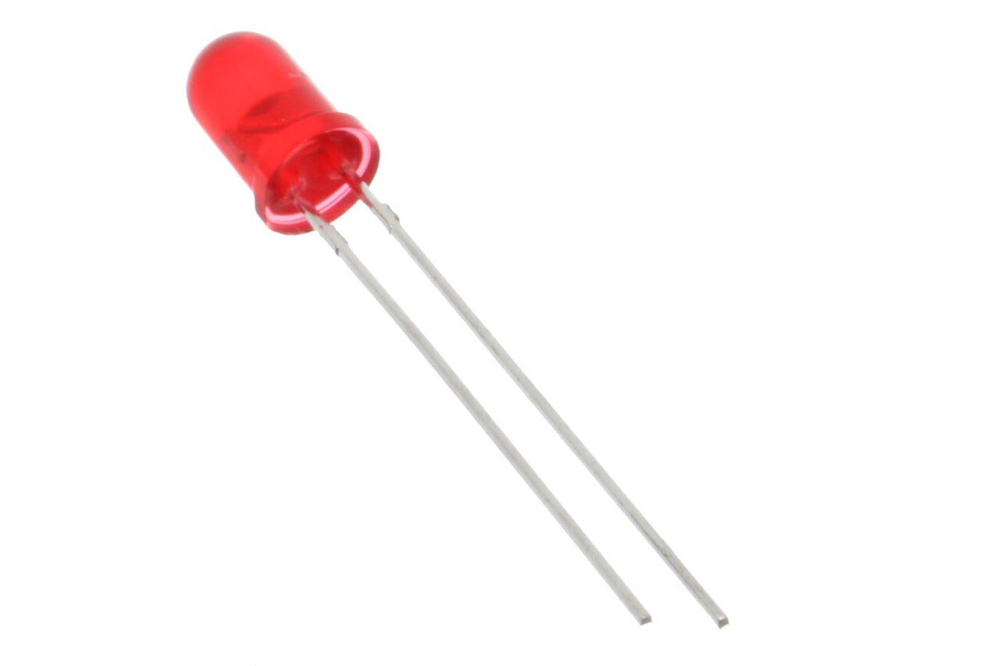
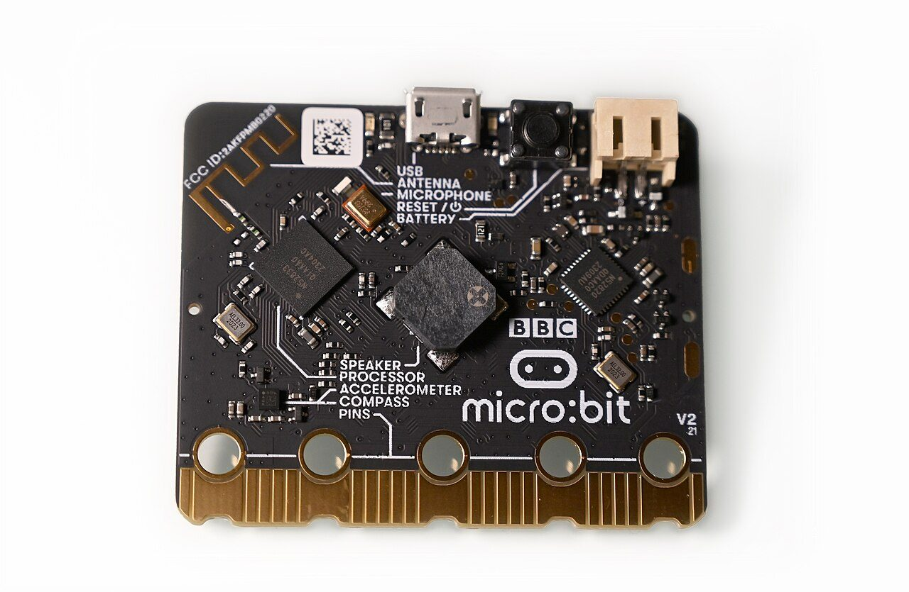
La misma cuenta que acabas de hacer, contada por otra persona. Ve con la libreta delante y comprueba que usa exactamente la misma fórmula: tensión de la fuente menos tensión del LED, dividido entre la corriente que tú decides.
El vídeo no se carga hasta que lo pulsas, y se reproduce sin cookies de seguimiento. Si no se ve aquí —porque la red del centro bloquee YouTube o porque ese vídeo no se deje empotrar—, ábrelo directamente aquí. Es obra de su autor y no forma parte del material publicado bajo la licencia de esta página.
Qué hay que hacer
Con material de verdad si lo hay (micro:bit o pila, LED, resistencias, pulsador, interruptor y pinzas de cocodrilo) y, si no, en Tinkercad Circuits. El orden no es negociable: primero la cuenta, luego el montaje.
- La cuenta, en la libreta. Con la fuente que os toque y el color de LED que os den: escribid Vfuente, Vf, la corriente que elegís y el cálculo completo de R. Decid cuál es el valor E12 que usaréis y por qué el de arriba y no el de abajo.
- El esquema, con simbología normalizada: fuente, pulsador, resistencia y LED, rotulados con sus valores. Que se note dónde está el cátodo.
- Montadlo y comprobad que enciende. Si no enciende, antes de tocar nada escribid las tres cosas que vais a comprobar y en qué orden.
- Medid la corriente con el polímetro en serie y comparadla con la que habíais calculado. Anotad las dos y la diferencia en tanto por ciento.
- Cambiad el pulsador por el interruptor y describid en dos líneas la diferencia, sin usar la palabra «botón».
- Si hay micro:bit: en MakeCode, haced que el LED de P0 parpadee con escritura digital y una pausa. Y luego que se encienda solo mientras se aprieta el botón A.
Cómo se evalúa
- El cálculo de R está completo y hecho antes de montar (3 puntos).
- La elección del valor E12 está justificada (1 punto).
- El esquema usa los símbolos normalizados y respeta la polaridad (2 puntos).
- El montaje enciende y la corriente medida se parece a la calculada (2 puntos).
- La diferencia entre pulsador e interruptor está bien explicada (1 punto).
- El programa de MakeCode funciona, o el montaje está simulado en Tinkercad (1 punto).
Ya no hace falta preguntarle a nadie qué resistencia le pone a su LED: se calcula, y sale un número distinto para cada fuente y cada color.
- LED verde (Vf = 2,2 V) en una pila de 9 V, y quieres que pasen 10 mA. ¿Qué resistencia le pones?
Ver respuesta
Sobra 9 − 2,2 = 6,8 V. R = 6,8 / 0,010 = 680 Ω, que además existe tal cual en la serie E12. Con ella pasan exactamente los 10 mA.
- ¿Por qué no se puede calcular la corriente de un LED con la ley de Ohm, si es un componente eléctrico como los demás?
Ver respuesta
Porque no es óhmico: su corriente no es proporcional a la tensión. Por debajo de su tensión directa no conduce y por encima la corriente se dispara, así que no hay una R que meter en la fórmula. Lo que sí es óhmico es la resistencia que le pones al lado, y por eso es ella la que fija la corriente.
- Quieres que un zumbador suene solo mientras tienes el dedo puesto. ¿Pulsador o interruptor? ¿Y de qué tipo?
Ver respuesta
Pulsador normalmente abierto (NA): cierra el circuito mientras lo aprietas y lo abre en cuanto lo sueltas, porque lleva un muelle que lo devuelve a su sitio. Con un interruptor sonaría hasta que volvieras a accionarlo.
Que sirva para algo
El último circuito lo eliges tú, y tiene que resolver un problema de verdad: con su esquema, sus cuentas y su presupuesto.
Cinco sesiones montando circuitos que te ponemos nosotros. Hoy el circuito lo eliges tú, y hay una condición: tiene que servir para algo.
Tres minutos, la libreta y nada más. Escribe tres sitios de tu casa, de tu mochila o de esta clase donde falte una luz o un aviso que ahora no existe. Sitios de verdad, con nombre: no «una habitación», sino «el fondo del armario, que no se ve nada cuando busco algo por la mañana».
Comparad la lista. Va a pasar casi seguro que la mayoría haya escrito el aparato en vez del problema: «quiero hacer un timbre», «una linterna». Y eso, que parece lo mismo, te cierra la puerta antes de empezar.
Porque «quiero hacer un timbre» ya ha decidido la solución. «Desde mi cuarto no oigo cuando llaman a la puerta» deja abiertas todas: un zumbador, una luz que parpadee —que es mejor si alguien no oye bien—, o las dos cosas. Esto no es nuevo: es exactamente el proceso tecnológico del primer tema. Se empieza por la necesidad, no por el cacharro.
Coge el mejor de tus tres y reescríbelo en una frase que no nombre ningún componente. Si no puedes, es que tenías un cacharro y no un problema.
Qué se entrega, y por qué cada cosa
Un proyecto de Tecnología no es el montaje: el montaje es solo la parte que se ve. Lo que se entrega es el montaje más los papeles que permiten que otra persona lo repita. Si tu circuito funciona y nadie puede reconstruirlo, no has terminado el trabajo.
El dossier del proyecto · seis apartados
- El problema, en una frase y sin nombrar componentes. Quién lo tiene y cuándo.
- Las condiciones: qué tiene que hacer, con qué alimentación, cuánto puede costar y de qué tamaño puede ser.
- El esquema eléctrico en simbología normalizada, con los valores rotulados.
- Los cálculos: la resistencia limitadora, la corriente que circula y la potencia. Con sus operaciones, no solo el resultado.
- La lista de materiales con cantidades y precios, y el total.
- La prueba: qué hiciste para comprobar que funciona, qué falló la primera vez y qué cambiaste.
El punto 3 no es decoración. Un esquema en símbolos normalizados es un plano: no dice dónde está cada pieza ni de qué color es, dice qué está conectado con qué, y lo entiende alguien que no hable tu idioma. Es la misma idea que el tema de representación gráfica: dibujar para que no haya dos interpretaciones posibles. Un dibujo bonito de tu montaje, con los cables tal como quedaron, sirve para una foto; para que otro lo construya, no.
Cuatro proyectos que caben en una sesión
Puedes proponer el tuyo, pero tiene que llevar al menos un LED con su resistencia calculada y un elemento de control bien elegido. Estos cuatro cumplen y caben en el tiempo que hay:
- Luz de armario. Un LED blanco o rojo que se enciende mientras la puerta está abierta. Control: pulsador normalmente cerrado apretado por la puerta. La gracia está en darse cuenta de que aquí el pulsador va al revés.
- Aviso de puerta. Un zumbador o un LED que avisa en tu cuarto de que llaman. Control: pulsador NA. Si usas LED, tendrás que discutir si se ve estando de espaldas.
- Luz de la bici o de la mochila. LED rojo, interruptor (tiene que quedarse encendido) y pila. Calcula cuántas horas dura la pila con tu corriente.
- Semáforo de dos luces. Un LED verde y uno rojo, cada uno con su resistencia —que no es la misma, porque Vf no es la misma— y un conmutador que pasa de uno a otro.
Hay una pregunta que aparece siempre en este punto: «¿y si le pongo dos LED, les pongo una resistencia a los dos o una a cada uno?». La respuesta corta es una a cada uno, y el motivo es bonito.
Si pones dos LED en paralelo compartiendo una sola resistencia, los dos reciben la misma tensión, sí; pero como no son óhmicos, unas décimas de diferencia entre ellos —y las hay, aunque sean de la misma bolsa— hacen que uno se lleve bastante más corriente que el otro. Resultado: uno alumbra más, se calienta más, conduce todavía mejor y se lleva aún más corriente. Acaba muriendo el que más lucía.
En serie sí comparten resistencia sin problema, porque la corriente es forzosamente la misma para los dos. Lo que hay que comprobar entonces es que la fuente llegue: dos LED rojos en serie ya piden 4 V solo para ellos, y de un pin de 3 V no salen.
Antes de entregar: comprueba si te lo sabes
Este test se corrige solo, aquí mismo. Las preguntas de calcular cambian de números cada vez, así que no vale aprenderse las respuestas: solo vale saber hacerlas. Tira dos o tres tandas.
Si algo se te resiste, no repitas el test: vuelve a la sesión donde estaba. Las de calcular con V, I y R son la sesión 2; las de serie y paralelo, la 3; las de potencia, kWh y dinero, la 4; la del LED, la 5.
Qué hay que entregar
El dossier de seis apartados de la teoría y el montaje funcionando, real o simulado en Tinkercad Circuits. Si el montaje no llega a funcionar, se entrega igual: el apartado 6 explica hasta dónde llegasteis y qué habíais descartado ya.
- Problema y condiciones escritos antes de elegir componentes.
- Esquema en simbología IEC, a regla o con un editor, con todos los valores rotulados.
- Cálculo de cada resistencia limitadora, con la corriente que habéis elegido y por qué esa.
- Lista de materiales con precios reales de una tienda de electrónica, y el total.
- Montaje y prueba. Una foto o una captura.
- Una frase final: qué cambiaríais si tuvierais otra sesión.
Cómo se evalúa
- El problema está planteado como necesidad y no como cacharro (1 punto).
- El esquema es correcto, normalizado y se entiende sin explicaciones (3 puntos).
- Los cálculos están hechos, con sus operaciones y sus unidades (3 puntos).
- El montaje funciona, o el fallo está diagnosticado por escrito (2 puntos).
- La lista de materiales está completa y sumada (1 punto).
Diez preguntas de todo el tema. Se corrigen aquí mismo, y cada una explica por qué —también las que aciertes—. No cuenta para nota: es para que sepas por dónde andas antes del examen.
Lo que tiene que haber quedado del tema
1. Pones un cable que va directo de un polo de la pila al otro. Eso es un cortocircuito porque…
2. El amperímetro se conecta en serie y el voltímetro en paralelo porque…
3. Una pila de 9 V alimenta una resistencia de 45 Ω. ¿Qué intensidad circula?
4. Tres lámparas iguales de 9 Ω en serie con una pila de 4,5 V. ¿Cuánta tensión recibe cada una?
5. En las guirnaldas antiguas, si se fundía una bombilla se apagaban todas. En las de ahora no. La diferencia es que…
6. Una plancha de 1.150 W conectada a 230 V. ¿Qué corriente le pasa?
7. Un microondas de 2.000 W funcionando 15 minutos. ¿Cuánta energía gasta?
8. Una base de enchufe normal es de 16 A, o sea 16 × 230 = 3.680 W. Si en una regleta juntas aparatos que suman 4.000 W…
9. ¿Por qué no se puede conectar un LED directamente a una pila de 4,5 V?
10. LED rojo (Vf = 2,0 V) en un pin de 3 V, y quieres que pasen 5 mA. ¿Qué resistencia le pones?
Se corrige en tu propio navegador: no se envía ni se guarda nada.
Repasa de dónde vienes. Empezaste con una pila, una bombilla y un cable que no encendía nada, y acabas calculando cuánta corriente puede dar un pin de una placa y cuánto cuesta al año dejar una luz puesta. Todo eso con tres magnitudes y una regla.
El tema entero, en seis líneas
- La corriente necesita un camino cerrado; sin receptor, es un cortocircuito.
- V empuja, I circula, R estorba, y los ata la ley de Ohm.
- En serie se suman las resistencias; en paralelo, las corrientes.
- P = V × I dice lo deprisa que gastas; E = P × t, lo que llevas gastado, y se paga en kWh.
- Un LED no es óhmico: su corriente la fija la resistencia que le pongas.
- El pulsador vuelve solo; el interruptor se queda.
- Tu montaje enciende cuando lo tocas y se apaga solo al rato. Enumera, en orden, las tres cosas que comprobarías.
Ver respuesta
Una respuesta razonable: 1) las conexiones que se tocan sin estar sujetas (las pinzas de cocodrilo son la causa más frecuente); 2) la pila, midiendo su tensión con el circuito conectado, que es cuando se ve si está agotada; 3) la polaridad y la temperatura del LED, por si está trabajando pasado de corriente. Lo que se evalúa aquí es que haya un orden y un motivo, no la lista exacta.
- ¿Por qué un esquema normalizado vale más que una foto del montaje?
Ver respuesta
Porque la foto enseña cómo quedó, y el esquema enseña qué está conectado con qué, que es lo único que hace falta para reconstruirlo. Además se lee igual en cualquier idioma, porque los símbolos están acordados (IEC 60617).
- Todo lo que has montado se enciende porque alguien aprieta algo. ¿Qué haría falta para que se encendiera solo cuando hace falta?
Ver respuesta
Hacen falta dos cosas que este tema no tiene: algo que mida el mundo (un sensor: de luz, de temperatura, de distancia) y algo que decida con esa medida. Lo segundo es una máquina que procesa información, y eso es justo el tema siguiente.
Lectura del tema
Si aún no la habéis hecho, la lectura va con este tema: 31 párrafos numerados, uno cada uno en voz alta, y diez preguntas por escrito.
Licencia y uso
Tema 8 · Electricidad · © 2026 Roberto P. García Llorente, Profesor de Tecnología en Educación Secundaria.
Publicado bajo Creative Commons Reconocimiento-CompartirIgual 4.0 Internacional. Puedes copiarlo, adaptarlo y redistribuirlo, incluso con fines comerciales, siempre que cites la autoría, indiques si lo has modificado y publiques tus versiones derivadas con esta misma licencia.
Cómo citar
Roberto P. García Llorente (2026). Tema 8 · Electricidad. https://rgllorente82-png.github.io/robertotecnologia/2eso/TyD/tema8/. Bajo licencia CC BY-SA 4.0.
Qué cubre
Los textos, los dibujos y el código de esta página, que son obra propia.
No cubre las fotografías, que proceden de Wikimedia Commons y conservan su propia licencia, indicada bajo cada una. Algunas son de dominio público; las demás están bajo licencias Creative Commons compatibles con esta, y se reproducen citando autoría y licencia como exigen. Tampoco cubre las tipografías, de Google Fonts con su propia licencia.
Otros usos
Para usos que excedan la licencia, abre una incidencia en el repositorio del proyecto.